Professional Summary
Detail-oriented Architectural Designer with over five years of experience in architectural design, construction documentation, and site supervision. Specialized in working drawings, BIM modeling, and high-quality 3D visualizations for residential, commercial, and institutional projects.
Professional Experience
Sheltercon Philippines Builders Inc.
Architectural Designer Dec 2023 – Jan 2025- Developed warehouse designs based on the architect’s specifications and weekly meetings.
- Prepared design presentations, including project construction progress visualization, for the client meetings.
- Produced detailed architectural and engineering drawings (as per structural engineer’s designs and specifications) for building permits.
- Prepared detailed engineering drawings for pre-cast columns, concrete gutters, ribbed walls, and steel trusses fabrication.
- Produced realistic renders of exterior and interior perspective.
- Conferred with the architect, and/or client on drawing consultation and approval.
- Responsible for AutoCAD drawings and BIM modelling using Archicad, and visual presentations using SketchUp with realistic rendering using Lumion, Vray, and/or Enscape.
- Produced 2D working detailed drawings necessary for the completion of daily work at project site.
- Regular communication with site engineers regarding project progress and all construction concerns.
- Responsible for examining and inspecting all architectural/civil works on construction site during site visits.
- Submitted daily and weekly accomplishment report to OTS Admin.
- Produced 2D working detail drawings necessary for the completion of daily work.
- Assisted in general project management tasks, including construction scheduling.
- Produced realistic renders of exterior and interior perspective.
- Prepared material estimates.
- Responsible for AutoCAD plans and details.
- Prepared visual presentations by producing 3D rendered images and walkthrough animations.
- Conducted presentations to OTS Undersecretary and the Technical Team with regards to site updates and acquiring RFI from CAAP with regards to building plans and details concerns.
- Provided material requisition and performed regular inventory.
- Reviewed accomplishment report and billing of subcontractors/trades.
- Responsible for examining all architectural aspects during construction.
- Performed inspection of site workers workmanship and adherence to plan.
C-Tambis Construction
Project Management Assistant Nov 2021 – Aug 2022- Submitted daily and weekly accomplishment report to OTS Admin.
- Produced 2D working detail drawings necessary for the completion of daily work.
- Assisted in general project management tasks, including construction scheduling.
- Produced realistic renders of exterior and interior perspective.
- Prepared material estimates.
- Responsible for AutoCAD plans and details.
- Prepared visual presentations by producing 3D rendered images and walkthrough animations.
- Conducted presentations to OTS Undersecretary and the Technical Team with regards to site updates and acquiring RFI from CAAP with regards to building plans and details concerns.
- Provided material requisition and performed regular inventory.
- Reviewed accomplishment report and billing of subcontractors/trades.
- Responsible for examining all architectural aspects during construction.
- Performed inspection of site workers workmanship and adherence to plan.
ABC Furniture Lines Inc.
CAD Draftsman Feb 2021 – Oct 2021- Performed ocular site visits and took actual measurements.
- Transformed ideas and concepts provided by the designer into the model and produces series of 2D drawings.
- Produced detailed furniture plans.
- Conferred with the architect, and/or client on drawing consultation and approval.
- Produced realistic renders of furniture products and prepare presentations.
- Produced site working drawings and material specifications.
Imagimax Interior Architecture
Architectural Internship Aug 2019 – Nov 2019- Performed ocular site visits and take actual measurement.
- Assisted in client meetings and architect’s or designer's consultation.
- Prepared 3D models of given architectural working drawings.
- Produced realistic images and walkthrough of designs, mostly residential, office building and commercial buildings.
- Prepared and assisted with 2D drafting of working and technical drawings that include electrical and plumbing systems.
- Inquired for quotations and working drawings from suppliers and contractors.
- Performed suppliers’ product brochures inventory.
Labanza Development and Construction
AutoCAD Operator, Site Supervisor, Modeler, and Renderer Jun 2018 – Jul 2019- Performed site visits and took actual site measurements.
- Produced 2D drafts of architectural plans including electrical, plumbing, and structural.
- Conferred with the architect and contractor on drawing consultation and approval.
- Produced final working architectural drawings and specifications.
- Performed site supervision and ensuring workers accurate daily work accomplishment.
CE Liwanag Design
Digital 3D Modeler and Renderer Jan 2017 – Feb 2018- Performed ocular site visits and take actual measurement.
- Responsible for drafting floor plan and elevations from obtained site measurements, through AutoCAD, ArchiCAD or Revit.
- Produced 3D model from floor plan, if made via AutoCAD, through Sketchup.
- Consulted with clients and designer for the design to be incorporated.
- Transformed ideas and concepts provided into the model and produces series of 2D drawings.
- Prepared visual presentations by producing 3D rendered images and walkthrough animations.
- Assisted with the process of acquiring Client's approval.
- Produced working drawings and material specifications.
- Performed site visit and site supervision.
Certification
Construction Occupational Safety and Health (COSH)
Safety Officer II
View Certificate
Technical Skills
BIM
ArchiCAD, Revit
ArchiCAD, Revit
CAD
AutoCAD
AutoCAD
3D Modeling
SketchUp, 3ds Max
SketchUp, 3ds Max
Rendering
Lumion, Enscape, V-Ray
Lumion, Enscape, V-Ray
Post-Processing
Photoshop, Premiere Pro, Canva
Photoshop, Premiere Pro, Canva
Documentation
MS Office, Google Workspace
MS Office, Google Workspace
References
- Ar. James G. Te – Owner/CEO, Sheltercon Philippines Builders, Inc.
- Mark Jayson Ramos – Senior Estimator, Sheltercon Philippines Builders, Inc.
- Engr. Arnel Sansan – Project Engineer, C-Tambis Construction
- Ar. Aristeo Garcia – Faculty Member, Mapua University
- Ar. Cristina Miraflor – Faculty Member, Mapua University
Portfolio
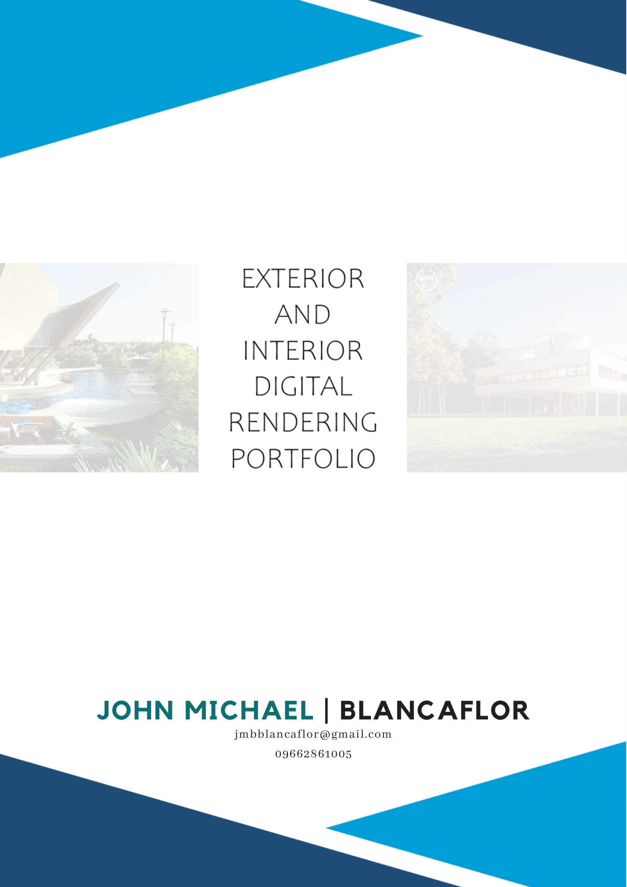
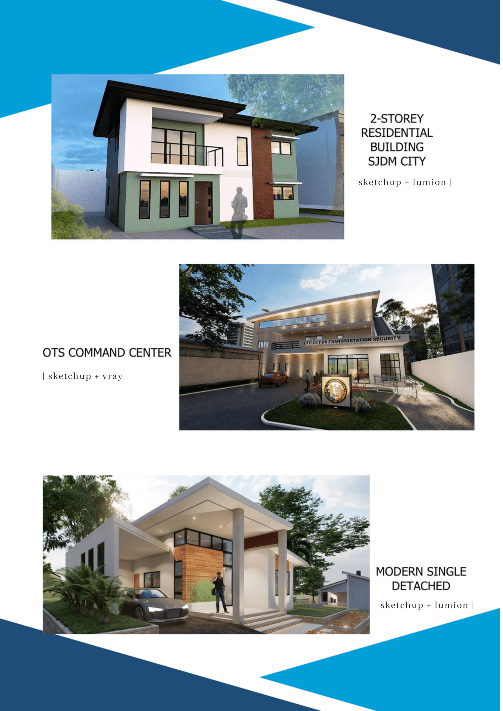
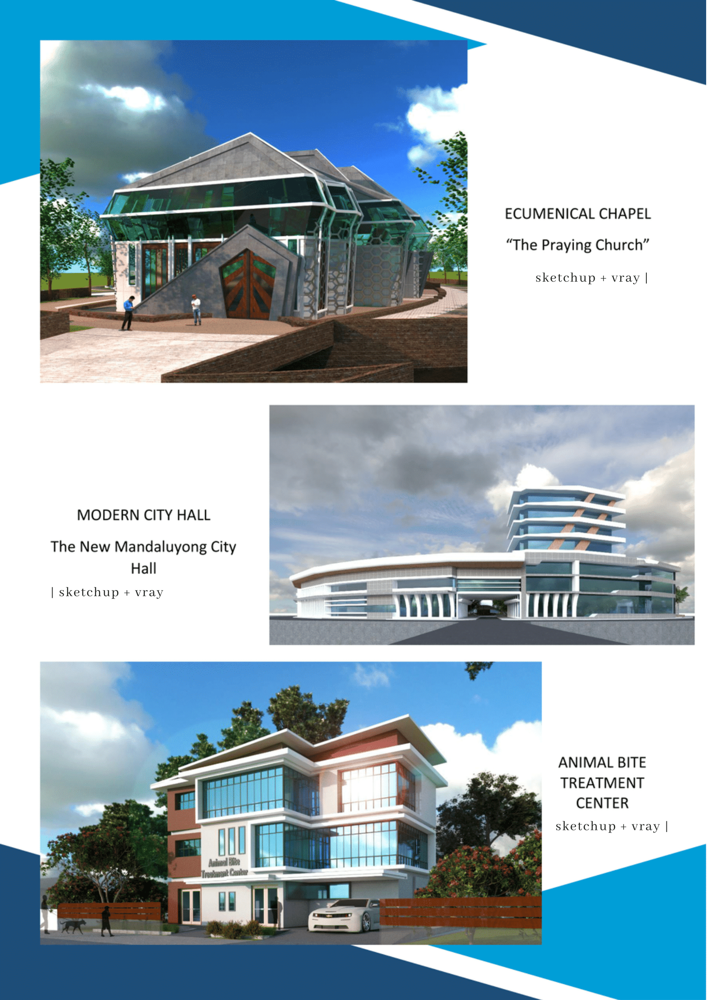
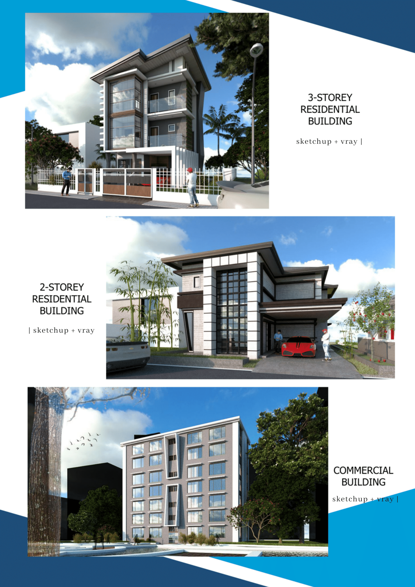
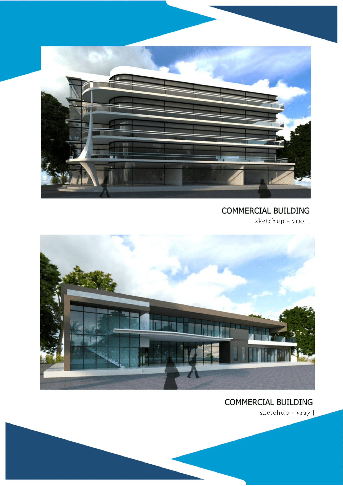
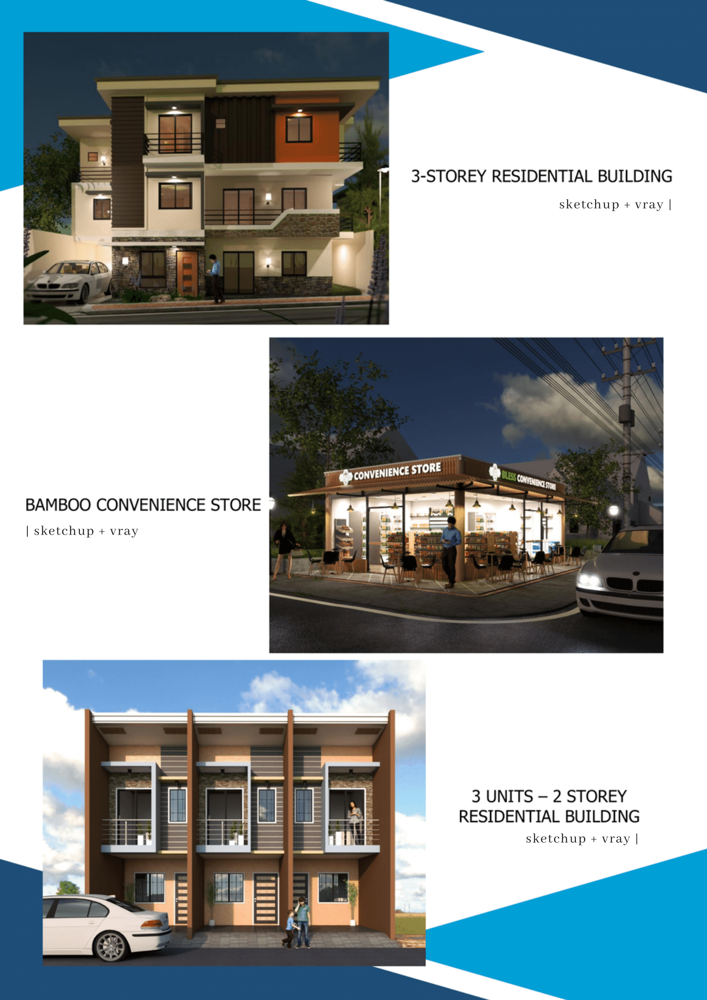
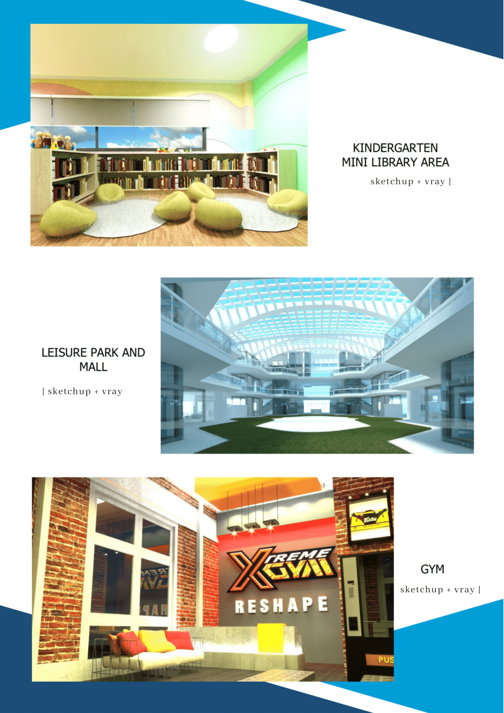
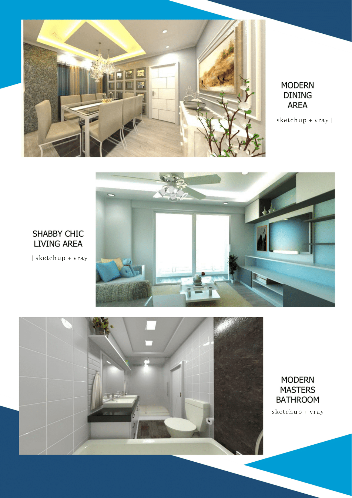
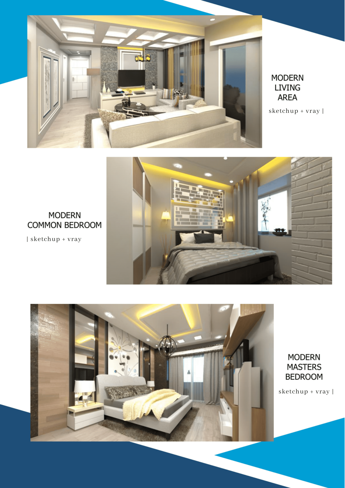
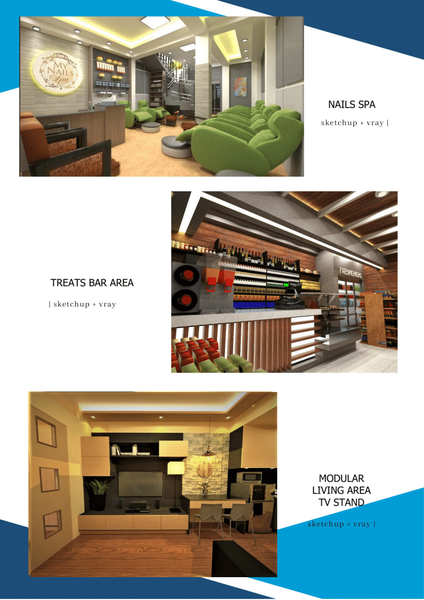
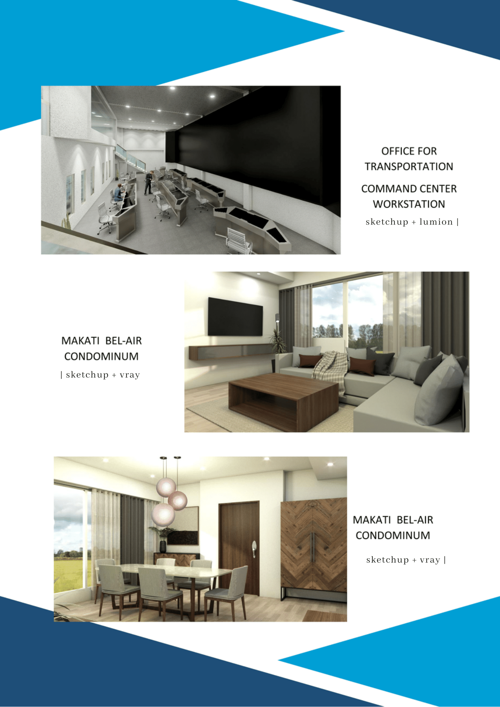
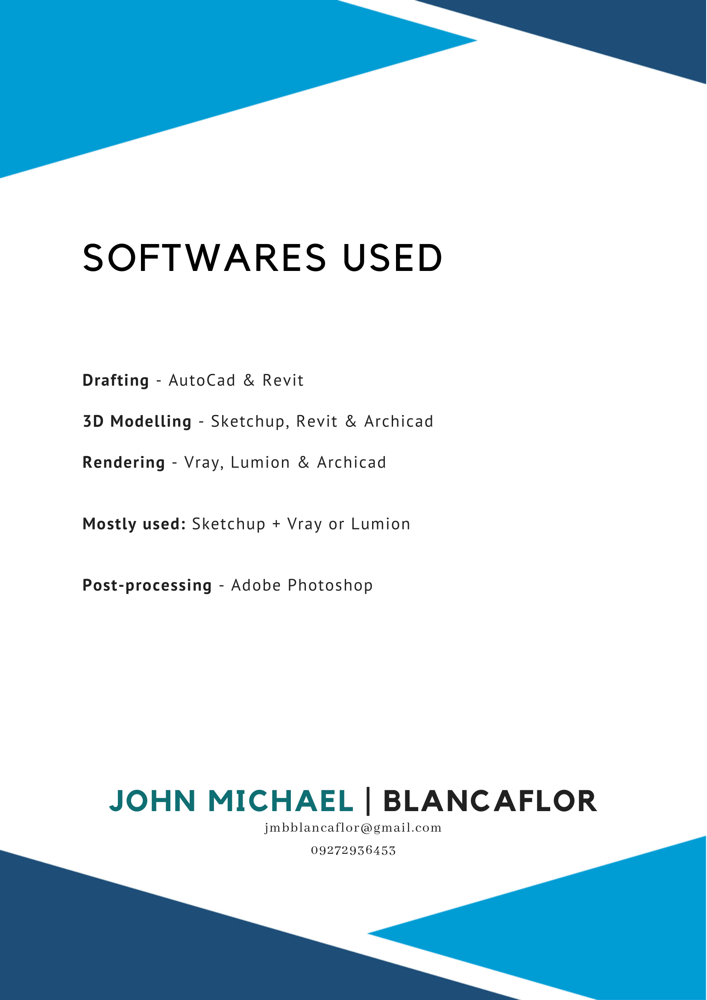